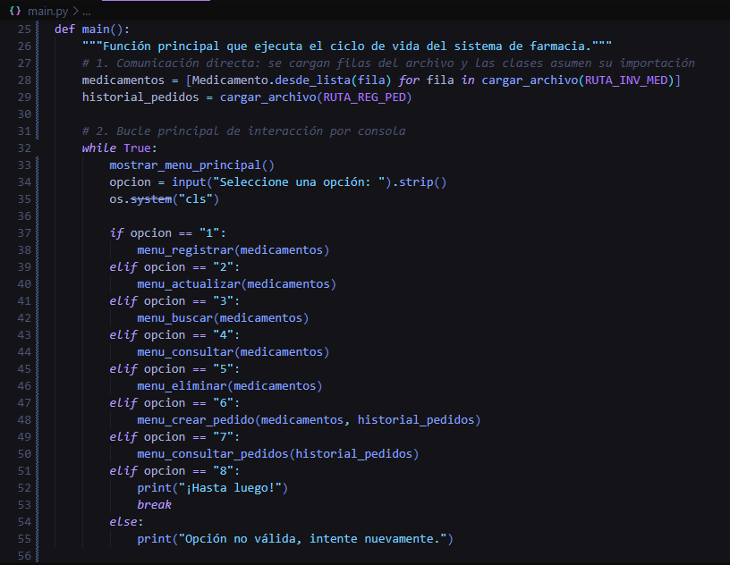
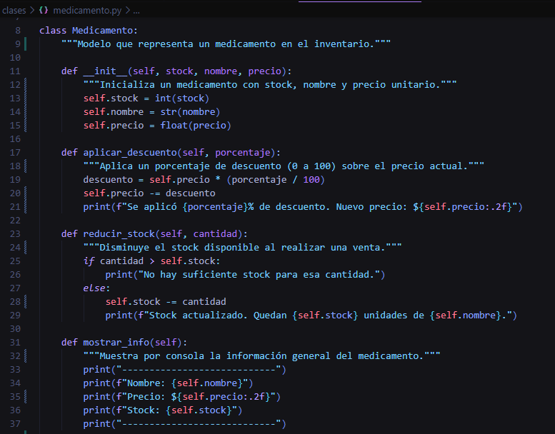
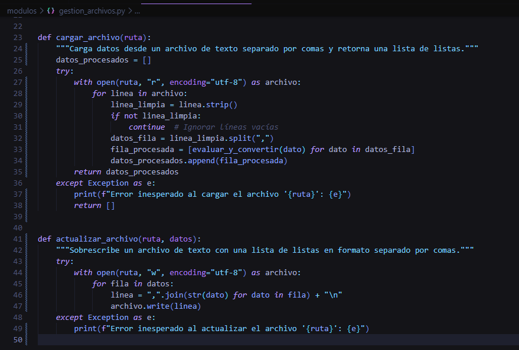

- Sistema de Farmacia
Desarrollar una aplicación en Python que simule la gestión completa de una farmacia, permitiendo el registro, consulta, modificación y eliminación de productos mediante un sistema con menús interactivos y persistencia de datos en archivos.
Las pequeñas farmacias carecen de sistemas digitales accesibles para administrar su inventario, ventas y reportes. La gestión manual genera errores, pérdida de información y dificultad para tomar decisiones. Este sistema ofrece una solución educativa y funcional que simula los procesos clave de una farmacia.



Las imágenes son ilustrativas. El sistema se ejecuta en consola Python.
El sistema presenta un menú principal que permite navegar entre las diferentes secciones: gestión de productos, reportes y configuración. Utiliza clases (Producto, Farmacia) para representar la lógica del negocio, y almacena toda la información en archivos JSON para garantizar la persistencia. Cada operación (registro, consulta, modificación, eliminación) valida los datos ingresados y muestra mensajes claros al usuario.
El proyecto PyPharma Manager demuestra la aplicación práctica de los conceptos de Programación Orientada a Objetos en Python, logrando un sistema funcional, modular y persistente. La implementación de menús interactivos, validación de datos y almacenamiento en archivos permite simular de manera eficiente la gestión de una farmacia, sentando las bases para futuras expansiones como interfaz gráfica o conexión a bases de datos.